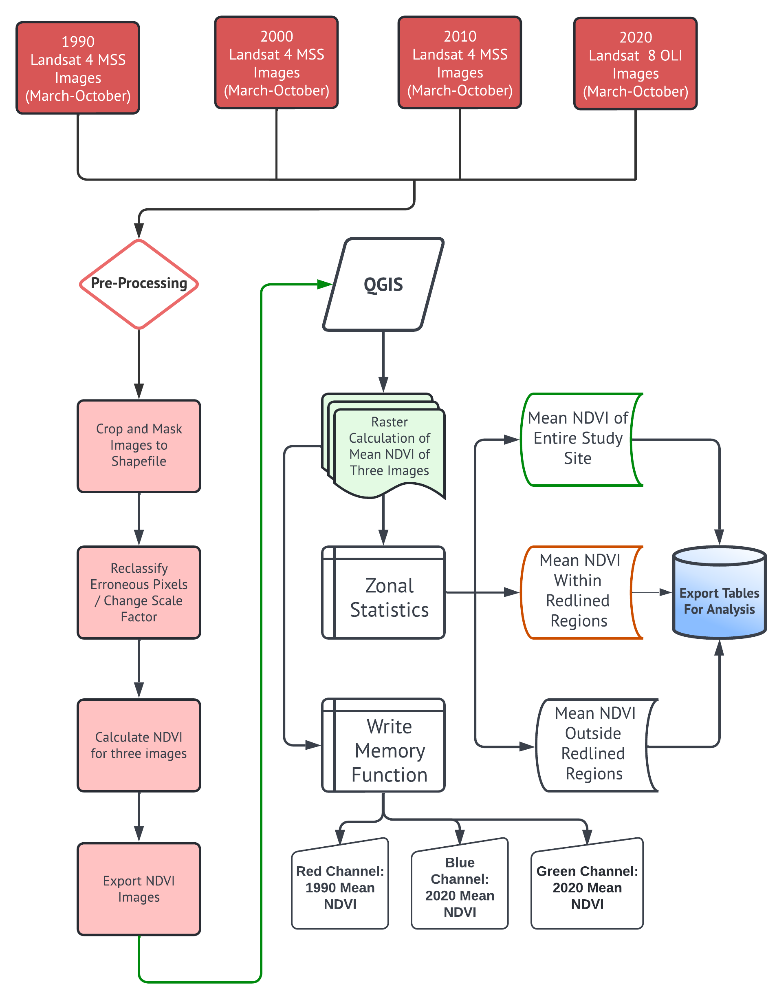
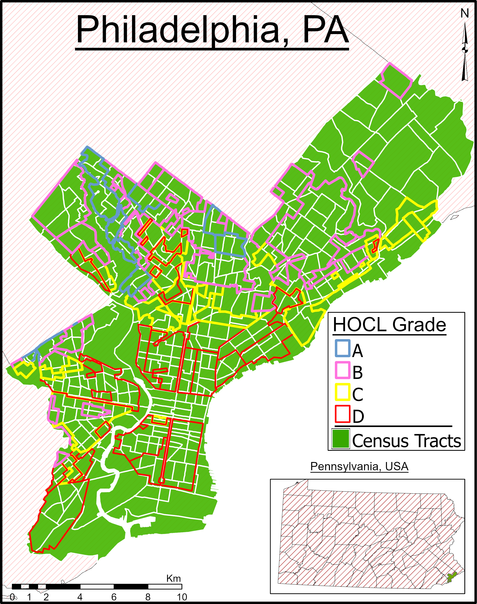
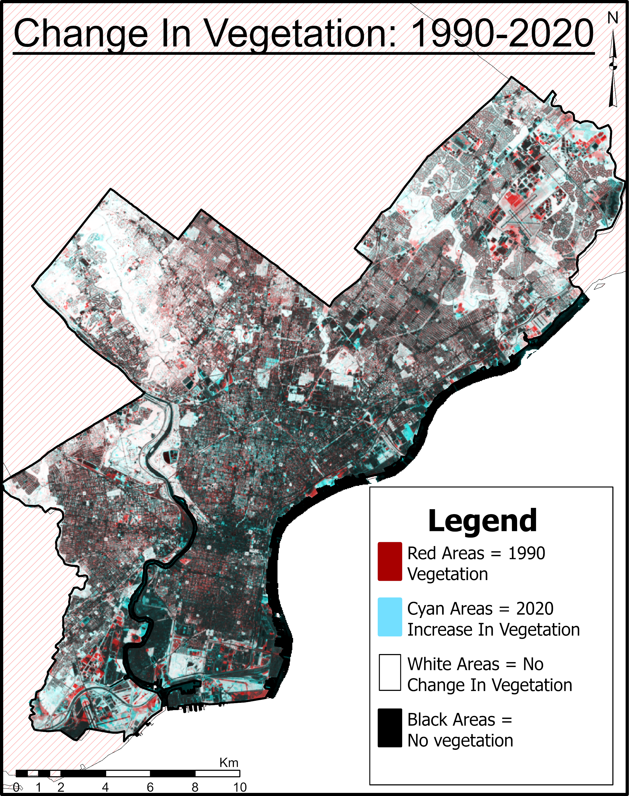
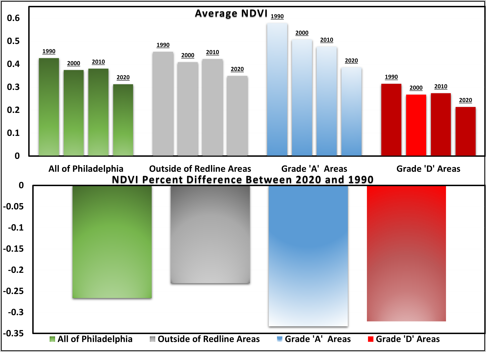
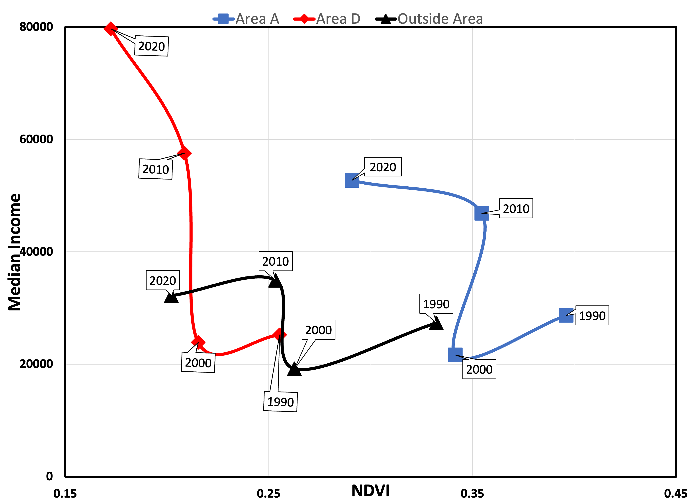
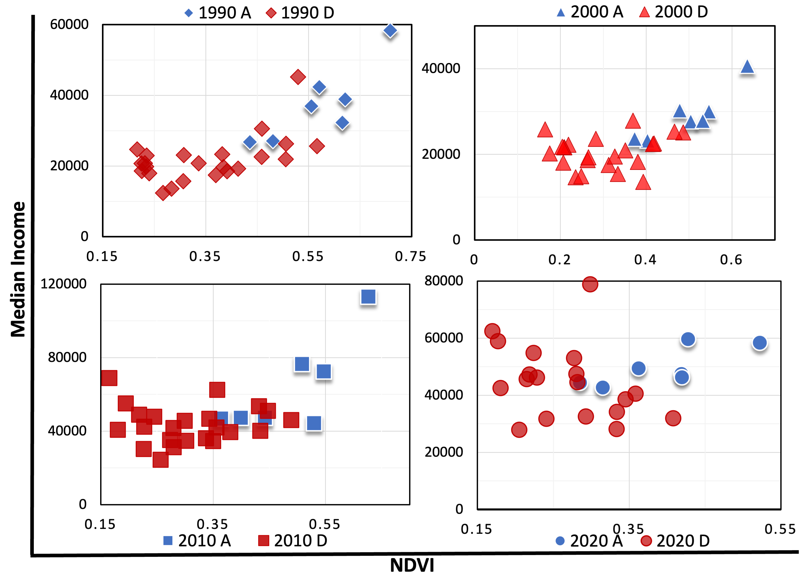
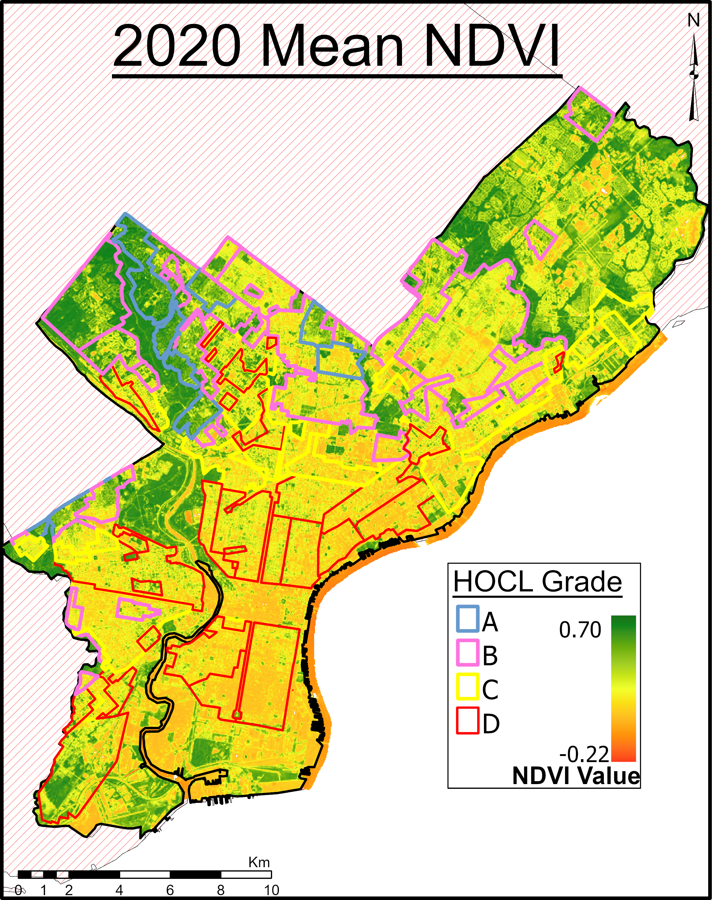
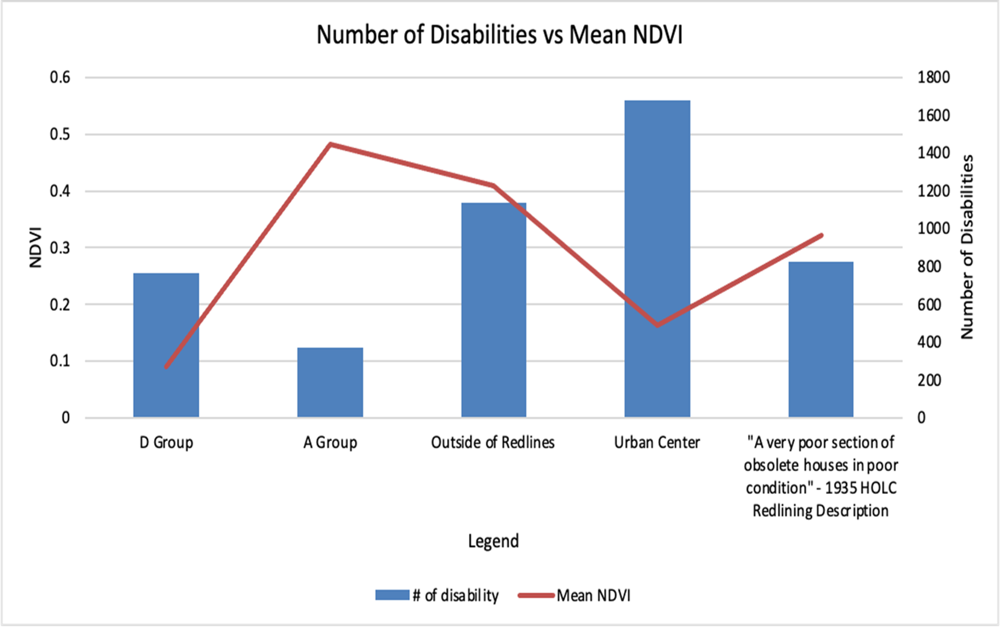

Analyzing Greenness through NDVI in Redlined areas in Philadelphia, Pennsylvania
Guillermo Romero, Victoria Li, Duy Le, Monet Izutsu
Introduction
‘Redlining’ is the term used for the racist, nativist, and class privileged maps and its grading system created by the Home Owners Loan corporation (HOCL) under the New Deal federal stimulus program of 1935. These HOCL grades and maps were used by mortgage lenders for decades furthering racial segregation and a disparity in financial resources\(^1\).

In this study, we first try to see if there are any relationships between these redlined areas and greenness in Philadelphia, Pennsylvania. We used Landsat 4-5 TM and Landsat 8-9 OLI/TIRS Collection Level-2 to:
Compare how vegetation coverage has changed over the span of 4 decades: 1990, 2000, 2010, and 2020.
Use NDVI as a measure for greenness and vegetation coverage.
We will also look at different socioeconomic variables to see how redlined areas and NDVI can affect:
Income\(^2\)
Number of people with disabilities in an area\(^3\)
We will use census tract data for this part of the study
Research Questions:
● How does NDVI change across 4 decades in redlined areas?
● How does NDVI change with income in redlined areas?
● How does NDVI change with disability status in redlined areas?
Hypotheses:
● Areas with a high HOLC Redlining grade, there will be a higher mean NDVI
● NDVI will increase in “D” graded areas as median income increases.
● Areas with higher NDVI will have lower reports of people with a disability; areas with lower NDVI will have higher reports of people with a disability
Methods

HOCL Grades
Redlining is a discriminatory practice that assigned neighborhood gradings (A-D) based on desirability\(^1\):
A = Best
B = Still Desirable
C = Declining
D = Hazardous
Mortgage lender denied loans and/or restricted services to certain areas of a community, often because of the racial characteristics of the applicant’s neighborhood included into the grading such as:
• “Undesirable negro section of very poor property”
• “Concentration of undesirables. Low class whites and negro”

Greenness Over Time, 1990 - 2020
Change detection of vegetation was performed by loading 1990 mean NDVI in red channel and 2020 mean NDVI in blue and green channels.

2020 increases in vegetation are observed in central region and Northwest and Southeast boundaries Urban areas in southern portion show very little change of vegetation on both sides of river since 1990

NDVI and Household Median Income
The analysis was performed by selecting only areas ‘A’, ‘D’, and the areas outside the redlining to compare the relationship between NDVI and Median Income in 1990, 2000, 2010, and 2020.
In 1990, the NDVI was higher (≈ 0.25 – 0.4), and median income was lower (≈ $ 25,000). In 2000, the NDVI started to continuously decrease (≈ 0.18 – 0.27) till 2020 in all areas, as median income keeps increasing (≈ $ 54,000).

Change in NDVI between 1990 and 2020 becomes less linear since the Census tracts that lost the most greenness was composed of areas ‘A’. While areas ‘D’ experienced a smaller, but still significant, decrease in greenness as well.

NDVI and Disability
Five different study areas:
• D Group
• A Group
• Census tract that lies outside of Redline area
• D Group based on HOLC grade

Results:
• D Group has lowest mean NDVI, and high number of disabled people compared to A Group
• A Group has highest mean NDVI and lowest number of disability reports
• In the urban center, also has low NDVI and high number of disabilities reported

Conclusion
For general trends, the data showed that average NDVI for areas with a grade of “A” showed the most loss over 4 decades. Areas graded “D” showed nearly the same amount of NDVI difference despite initially having much lower NDVI values in 1990. Median Household Income increases with lower mean NDVI values: this holds true in areas A, D and non-redlined zones. This is consistent with the findings from Casey et al. proving how urban greenness is unequally distributed with neighborhood demographics. Disability, followed areas of greater redlining (lower grades) and areas of lower NDVI values. Within redlined areas, all areas with “A” grades have significantly higher NDVI values, higher medium income and lower disability rates than all areas with a “D” grade. Overall, the presence of green areas in urban spaces have positive impacts to the individual, including lower rates of disabilities and higher median income levels. Areas that are within the redlined boundaries experience these lower standards of living compared to areas that are not redlined. City planners and local/state governments should increase greenness and promote social equity goals, especially in these disadvantaged communities.
References
Nardone, Anthony, et al. “Redlines and Greenspace: The Relationship between Historical Redlining and 2010 Greenspace across the United States.” National Institute of Environmental Health Sciences, U.S. Department of Health and Human Services, 27 Jan.2021, https://ehp.niehs.nih.gov/doi/10.1289/EHP7495.
Casey, J.A.; James, P.; Cushing, L.; Jesdale, B.M.; Morello-Frosch, R. Race, Ethnicity, Income Concentration and 10-Year Change in Urban Greenness in the United States. Int. J. Environ. Res. Public Health 2017, 14, 1546, doi.org/10.3390/ijerph14121546
Zhu, Anna et al. “Residential greenness, activities of daily living, and instrumental activities of daily living: A longitudinal cohort study of older adults in China.” Environmental epidemiology (Philadelphia, Pa.) vol. 3,5 e065. 14 Oct. 2019, doi:10.1097/EE9.0000000000000065